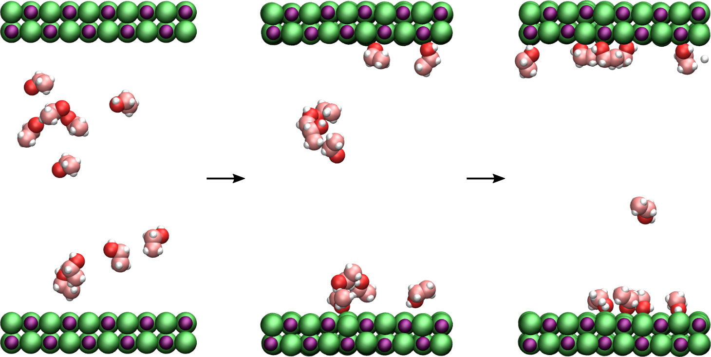
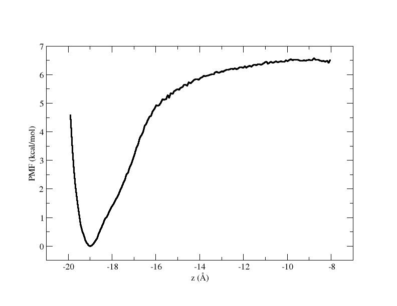

Adsorption of ethanol at a NaCl(100) crystal surface
Free energy profile of ethanol near a flat surface
 Figure: Ethanol molecules adsorbed at the NaCl(100) surface.
The objective of this tutorial is to build a molecular dynamics system made of a flat crystal wall (NaCl) and ethanol molecules, using a molecule topology downloaded from the ATB repository. There are three main parts to this tutorial:
- System construction - First, the initial configuration will be generated.
- Molecular dynamics- Seconds, molecular dynamics simulations will be perform to equilibrate the system and then generate data for free energy profile calculation.
- Free energy profile - And third, the wham algorithm is used to construct the free energy profile.
Support the creation of material for LAMMPS by subscribing to my youtube channel, making a small donation here, any amount is appreciated and highly encourages me to improve this page.
Become a patreon and get help with your LAMMPS project. I try to answer all questions I receive by email, but priority is given to patreons.
If you are new to LAMMPS, I recommend you to follow this simpler tutorial first. If you have any suggestion about these tutorials, please contact me by email at simon.gravelle at live.fr.
Download the files from the ATB
We first need to download the molecule stucture and force field information from the Automated Topology Builder (ATB) and repository. Go to the ATB repository website (you will need to register). Then go to Existing Molecules, choose a molecule. I am choosing an ethanol molecule, but you can choose another one (at your own risk) and follow this tutorial. Then, click on Molecular Dynamics (MD) Files, choose LAMMPS format, and download the GROMOS force field, and the all-atom moltemplate file.
Inside the moltemplate file, there is an example of `system.lt` allowing for the creation of LAMMPS input file. In my case, it looks like that:
# system.lt
# simulation of a single molecule in a box of size 50x50x50 Angstroms^3
write_once("Data Boundary") {
-25.0 25.0 xlo xhi
-25.0 25.0 ylo yhi
-25.0 25.0 zlo zhi
}
write_once("In Init") {
# a variable named `cutoff` is required by GROMOS_54A7_ATB.lt
variable cutoff equal 14.0 # Angstroms
boundary p p p
}
# import the forcefield file
import "GROMOS_54A7_ATB.lt"
# import molecule building block file
import "KIR7_allatom_optimized_geometry.lt"
# create a single copy of this molecule at position 0,0,0
mol1 = new KIR7.move(0.0,0.0,0.0)
Run it using Moltemplate,
moltemplate.sh ./system.lt
to generate several LAMMPS input files corresponding to a single molecule in vacuum, which you can run using LAMMPS:
lmp -in system.in
Let us arrange the data (currently the files contain all bonds, angles, etc. information of the force field, which makes it unplesant to read), and isolate only the data concerning directly the molecule of interest. Create four files, named it Positions.dat, Bonds.dat, Angles.dat, and Dihedrals.dat, and copy the information in it. Then renumber the atoms types, bonds, angles starting from 1. For the ethanol molecule, the Bonds.dat file looks like that:
1 5 1 2
2 2 2 3
3 4 3 4
4 4 3 5
5 3 3 6
6 1 6 7
7 1 6 8
8 1 6 9
The first column is the bond index, going from 1 to 8 (8 is the number of bond for the Ethanol molecule), the second column is the identity of the bond, for which are associated bond length and energy (which will be given in the parameter file, see below):
bond_coeff 1 349.274 1.0900
bond_coeff 2 399.792 1.4300
bond_coeff 3 299.844 1.5200
bond_coeff 4 349.928 1.1000
bond_coeff 5 442.161 0.9720
The third and fourth columns of the Bonds.dat file are the indexes of the atoms linked by the bond.
Sorting out these file is a tedious task, to follow this tutorial, you can download these files for ethanol by clicking here.
If you choose another molecule, you may have additional impropers, or may not have dihedrals constraints. In that case you will have to make a few adjustment to the following codes.
Create the initial configuration
Let us replicate the ethanol molecule in between two crystal walls made of NaCl. Create a folder named Ethanol and place the previously generated files. Create another folder named NaCl, create a file named Positions.dat in it, and copy the following lines correponding to the initial positions of 8 NaCl atoms:
1 1 1 1 0. 0. 0.
2 2 2 -1 0. 2.84 0.
3 3 2 -1 2.84 0. 0.
4 4 1 1 2.84 2.84 0.
5 5 2 -1 0. 0. 2.84
6 6 1 1 0. 2.84 2.84
7 7 1 1 2.84 0. 2.84
8 8 2 -1 2.84 2.84 2.84
Then, download this Python script , and run it using
python3 generatedata.py
to generate the data.lammps file containing the initial configuration. This home-made Python script reads the position and molecule information for both NaCl and ethanol, replciate them, and write a lammps data file. Feel free to modify it and add more molecules (or a different molecule).
To properly insert molecules within a structure using a custom script, it is important to detect the positions of the neighbor atoms before inserting a molecule, otherwise atoms will overlap and LAMMPS will crash.
The present Python script rotates the molecules to give them a random orientation, this step is not really necessary as a short molecular dynamics simulation would randomize the molecule orientation anyway.
Alternatively, you can download the LAMMPS file I have generated here and use it to continue with the tutorial. Let us also create a parameter file containing all the values of interactions between the atoms:
############### mass parameters
mass 1 22.99000
mass 2 35.45000
mass 3 12.011
mass 4 1.008
mass 5 1.008
mass 6 12.011
mass 7 15.9994
############### pair coeffs
pair_coeff 1 1 0.0552 2.31
pair_coeff 2 2 0.1004 4.3
pair_coeff 3 3 0.0663 3.5812
pair_coeff 4 4 0.0281 2.3734
pair_coeff 5 5 0.0000 0.0000
pair_coeff 6 6 0.2450 2.8114
pair_coeff 7 7 0.1195 3.1000
############### bond coeffs
bond_coeff 1 349.274 1.0900
bond_coeff 2 399.792 1.4300
bond_coeff 3 299.844 1.5200
bond_coeff 4 349.928 1.1000
bond_coeff 5 442.161 0.9720
############### angle coeffs
angle_coeff 1 47.694 109.500
angle_coeff 2 55.127 109.500
angle_coeff 3 55.114 111.000
angle_coeff 4 52.477 107.570
angle_coeff 5 47.502 108.530
angle_coeff 6 54.993 110.300
############### dihedral coeffs
dihedral_coeff 1 0.30115 1 3
dihedral_coeff 2 1.415 1 3
dihedral_coeff 3 0.0 1 1
Atoms ot type 1 and 2 are Na and Cl, and atoms 3 to 7 are the different hydrogen, oxygen, and carbon atoms of the ethanol molecules.
All the force field values for the ethanol's atoms come from the ATB, and from the GROMOS force field. The force field values for NaCl have been taken from this paper by Loche et al.
This interactions between atoms of types i and j will be calculated using the arithmetic rule of LAMMPS.
Equilibrium
Using LAMMPS, let us bring the system to equilibrium. Open a new text file, name it input.lammps, and copy the following lines in it:
# ethanol at a nacl surface
############### variables
variable pre equal 1 # desired pressure (Atm)
variable tem equal 300 # desired temperature (K)
############### main parameters
units real # style of units (A, fs, Kcal/mol)
atom_style full # molecular + charge
bond_style harmonic
angle_style harmonic
dihedral_style harmonic
boundary p p p # periodic boundary conditions
pair_style lj/cut/coul/long 10 # cut-off 1 nm
kspace_style pppm 1.0e-4
pair_modify mix arithmetic tail yes # eij = sqrt(ei*ej), dij = 0.5*(di+dj)
The script starts with the definition of two variables (temperature and pressure). Then, units are defined, as well as atom, bond, angle, and dihedral styles. Periodic boundary conditions are used in all directions of space. Atoms interact through Lennard-Jones with a cut off at 1 nm, as well as through long-range Coulomb interactions using the particle-particle particle-mesh solver with an accuracy of 0.0001. Finally, the arithmetic rule is used to control interaction between atoms of different types.
Add as well the following lines to the script:
############### import positions and parameters
read_data data.lammps
include PARM.lammps
############### groups # descriptions
group nacl type 1 2 # nacl wall
group eth type 3 4 5 6 7 # ethanol molecules
############### dynamics
timestep 1 # (fs)
fix mymme nacl momentum 1 linear 1 1 1
velocity all create ${tem} 4928459 rot yes mom yes dist gaussian
fix mynpt all npt temp ${tem} ${tem} 100 x ${pre} ${pre} 1000 y ${pre} ${pre} 1000
############### output
thermo 1000
dump dp1 all atom 1000 dump.lammpstrj # print every 1 ps
############### run
run 100000 # 100 ps
write_data data.npt
After the importation of the previously generated data and parameter files, two groups are defined from atoms types. Then, a timestep of 1 fs is set. The linear momentum of the NaCl block are canceled in all three directions to avoid drifting. Initial velocities are given to the atoms. An isotropic NPT thermostating is used, with the volume being adjusted only along the x and y directions (and not along the z direction to avoid the collapse of the two walls).
Trajectories are printed in a dump file every 1 ps, and information to the terminal every 1 ps. The simulation runs for 100 ps and finally the final state is printed in the terminal. You can visualize the dump file using VMD or Ovito.
Umbrella sampling
From the previously equilibrated configuration, let us perform the umbrella sampling configuration. To do so, we are going to pick one of the ethanol molecule, and make it move along an axis normal to the NaCl surface. The actual position of the molecule will be recorded in data file, and dealt with later.
Create another input file within the same folder, and copy the following lines in it:
# ethanol at a nacl surface
############### variables
variable pre equal 1 # desired pressure (Atm)
variable tem equal 300 # desired temperature (K)
variable k1 equal 0.5 # spring constant
variable k2 equal 5 # spring constant
############### main parameters
units real # style of units (A, fs, Kcal/mol)
atom_style full # molecular + charge
bond_style harmonic
angle_style harmonic
dihedral_style harmonic
boundary p p p # periodic boundary conditions
pair_style lj/cut/coul/long 10 # cut-off 1 nm
kspace_style pppm 1.0e-4
pair_modify mix arithmetic tail yes # eij = sqrt(ei*ej), dij = 0.5*(di+dj)
############### import positions and parameters
read_data data.npt
include PARM.lammps
############### groups # descriptions
group nacl type 1 2 # nacl wall
group eth type 3 4 5 6 7 # ethanol molecules
group oxy type 7 # ethanol molecules
group mol2 molecule 2
group topull intersect mol2 oxy
############### dynamics
timestep 1 # (fs)
fix mynpt all npt temp ${tem} ${tem} 100 x ${pre} ${pre} 1000 y ${pre} ${pre} 1000
variable zini equal xcm(nacl,z)
fix mytth1 nacl spring tether ${k2} NULL NULL ${zini} 0
############### output
thermo 1000
dump dp1 all atom 50000 dump.lammpstrj
############### run
variable zave equal xcm(topull,z)
variable cpt loop 24
label loop
variable zdes equal -20+0.5*(${cpt}-1)
fix mytth2 topull spring tether ${k1} 0 0 ${zdes} 0
run 50000
fix myat1 all ave/time 10 10 100 v_zave v_zdes file position.${cpt}.dat
run 500000
unfix myat1
next cpt
jump loop.lammps loop
As compared with the previous step, the first difference is the definition of two spring constants k1 and k2 that will be used respectively to maintain the ethanol molecule, and the nacl wall near given positions. A second difference is that new groups have been defined, with the group 'topull' being made of one single oxygen atom of the ethanol molecule. This group is itself build from the intersection between the group 'oxy' made of all the oxygen atoms of type 7, and the group 'mol2' made of all the atom of the molecule of index 2 (the wall is index 1, and the ethanol molecules are indexes 2, 3, 4 etc). Finally, a loop made of 24 iterations is defined, the variable 'zdes' is the desired position we want to imposed to the atom of group 'topull', it goes from -20 Å (very close to the bottom wall) to -8 Å (far from the wall). The fix 'mytth2' is used to add the harmonic potential to the atom 'topull', note that the fix 'mytth1' had been defined previouly and is used to prevent the NaCl wall for drifting from its original position 'zini'.
Run the script using LAMMPS. 24 files named position.1.dat, position.2.dat, etc. must appear inside the folder. If you visualize the dump file with VMD, you see one molecule being progressively moved out from the wall. The other molecules remain unperturbed and free to diffuse and adsorb.
Building the free energy profile
In order to treat the data, we are going to use the WHAM algorithm. You can download and compile the version of Alan Grossfield. In order to apply the WHAM algorithm to our simulation, we first need to create a metadata file. This file simply contain the paths of the data file, the value of \(x_\text{des}\), and the values of \(k\). To generate the file more easily, you can run this script using Octave (assuming that the wham algorithm is located in the same folder as the LAMMPS simulations)
file=fopen('metadata.dat','wt');
file=fopen('metadata.dat','wt');
for a=1:24
X=['./position.',num2str(a),'.dat ',num2str(-20+0.5*(a-1)),' 0.5'];
fprintf(file,X);
fprintf(file,'\n');
end
The generated file named metadata.dat looks like that (alternatively you can download it here):
./position.1.dat -99 0.0205
./position.1.dat -20 0.5
./position.2.dat -19.5 0.5
./position.3.dat -19 0.5
./position.4.dat -18.5 0.5
(...)
./position.23.dat -9 0.5
./position.24.dat -8.5 0.5
Then, simply run the following command
./wham/wham/wham -20 -8 160 1e-8 300 0 metadata.dat PMF.dat
where -20 and -8 are the boundaries, 160 the number of bins, 1e-8 the tolerance, and 300 the temperature. A file named PMF.dat has been created, and contains the free energy profile in Kcal/mol:

The profile indicates that it is more energetically favorable for an ethanol molecule to adsorb at the surface rather than remaining far from it, which is consistent with what we observe with the unperturbed molecules (they stick to the surface). The energy well is about 6.5 kcal/mol, which is about \(0.6 \times k_\text{B} T\).
Going further
If you want to go further, there are several interesting things that can be done with this system:
Bonding. You can detect which atom of the ethanol molecule are adsorbed to which atom of the NaCl surface by analyzing the trajectory file.
Diffusion coefficient. You can measure the diffusion coefficient of the ethanol molecule normal to the wall and evaluate for example the influence of the number of ethanol molecule on the diffusion coefficient of a single molecule. You should see that are low concentration, molecule are diffusing slowly because they are all adsorbed to a trap, as the concentration increase, they are less and less available trap (i.e. adsorbing NaCl site), leading to faster diffusion in average.
Add water. Add water to the system. With two molecule types, there is competitive adsorption. Who will win? Water or ethanol? It depends on the relative interaction between NaCl, water, and ethanol.
Support the creation of material for LAMMPS by subscribing to my youtube channel, making a small donation here, any amount is appreciated and highly encourages me to improve this page.
Become a patreon and get help with your LAMMPS project. I try to answer all questions I receive by email, but priority is given to patreons.